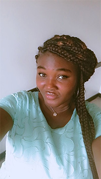

Salomey Bempomaa Toah | WDD 130
Hello, my name is Salomey Bempomaa Toah. I am from Ghana, West Africa. I am very excited to be in this class. I am currently working as an interior designer and I am also studying graphic design and web design and development at BYU Pathway - IDAHO. I have always been fascinated by how creativity and technology can come together to shape the way we experience the world. This passion led me into the world of coding and design, where I enjoy turning ideas into interactive and meaningful digital experience. My focus is on building websites that are not only functional, but also engaging and user-friendly. I am passionate about creating websites tha are both visually appealing and easy to use. The skills I hope to improve includes HTML, CSS, and a growing knowledge of JavaScript. I enjoy working on personal projects that challenge me to learn new technologies snd improve my design sense. My goal is to combine creativity with technical skills to build digital solution that make a difference. Beyond my academic journey, I am a curious learner who loves exploring different ways to grow personally and professionally. I am constantly experimenting with new tools. Also, I enjoy exploring new ideas, learning creative tools, and finding inspiration through everyday life. I believe in continuous growth and I'm excited about the future opportunities in tech and design. I am a very calm person, but I talk a lot when I am alone. I love swimming, cooking, watching movies, going to the beach, reading, drawing and most of all, designing. It makes me feel alive, like I have a purpose and i have finally found it. I can do all things through Christ who strength me as I trust in the process.